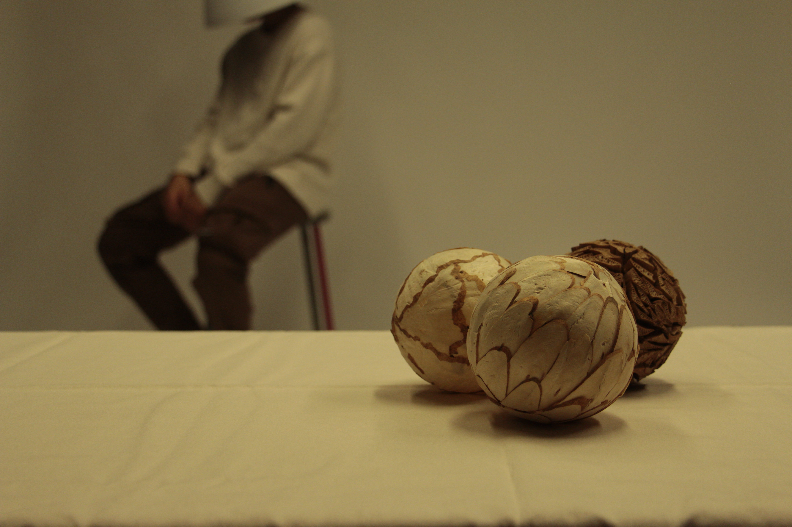
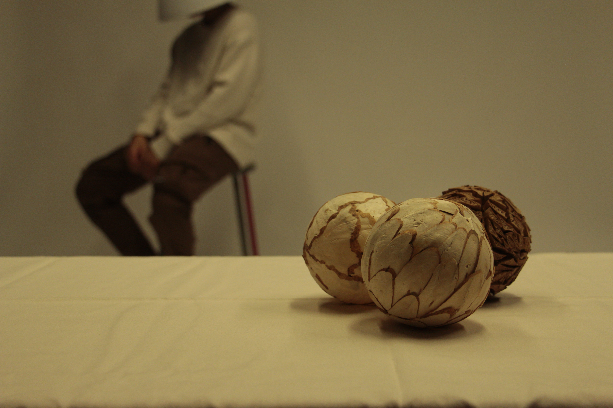

Inside all lenses, there is a thing called an iris. The iris is a series of leaves of metal that move together to create an often roughly-circular “Aperture” (or in simple terms a hole) that varies in size. The larger the aperture, the more light is let through, the smaller the aperture the less light is let through. What appear to be small numbers actually relate to a larger aperture, and what appear to be big numbers relate to a smaller apertures. You can see the scale of numbers on the top of the lens below. 2.8 is the largest aperture, 22 is the smallest. 2.8 lets the most light in. 22 lets the least light in.
Aperture affects the depth of field for your photos, the range between the nearest and farthest objects in focus within a picture. Shallow depth of field, which blurs the background to help pop the in-focus subject of the photo, is achieved with a wide aperture. A smaller aperture will give you a larger depth of field, which allows you to keep a larger amount of the frame in focus, ideal for group shots or scenic landscapes, compared to the shallow depth of field photos great for portraits or food photography.

 
